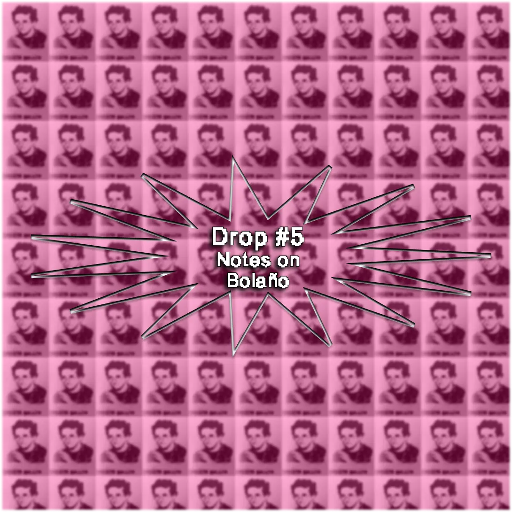
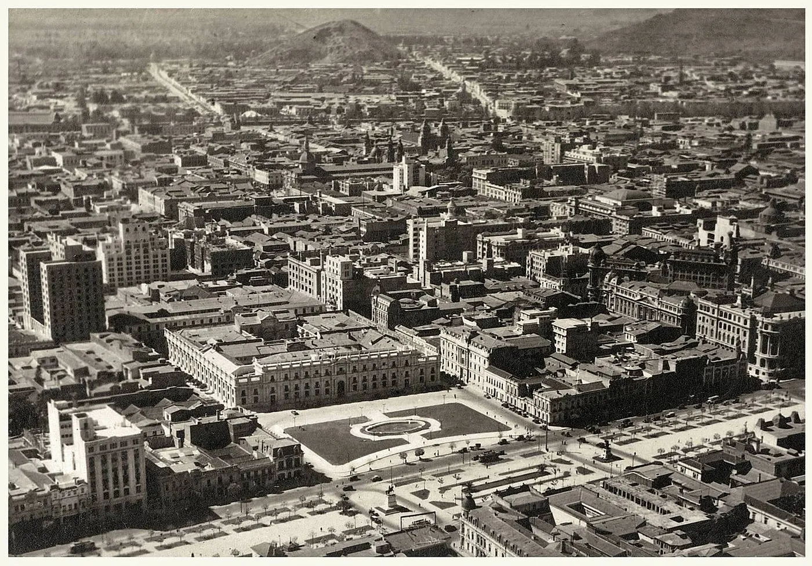
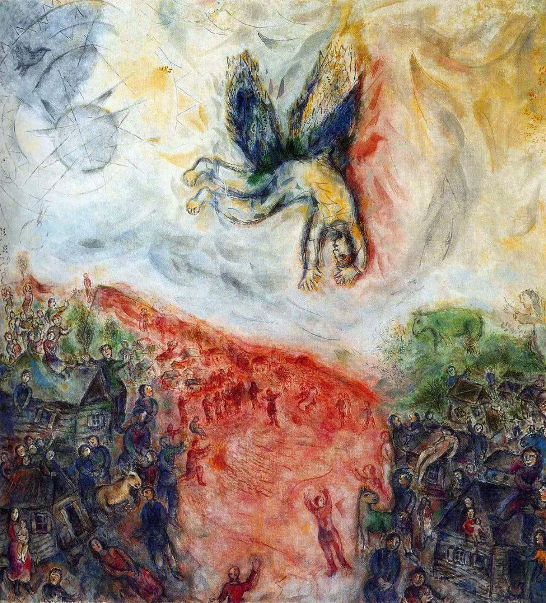
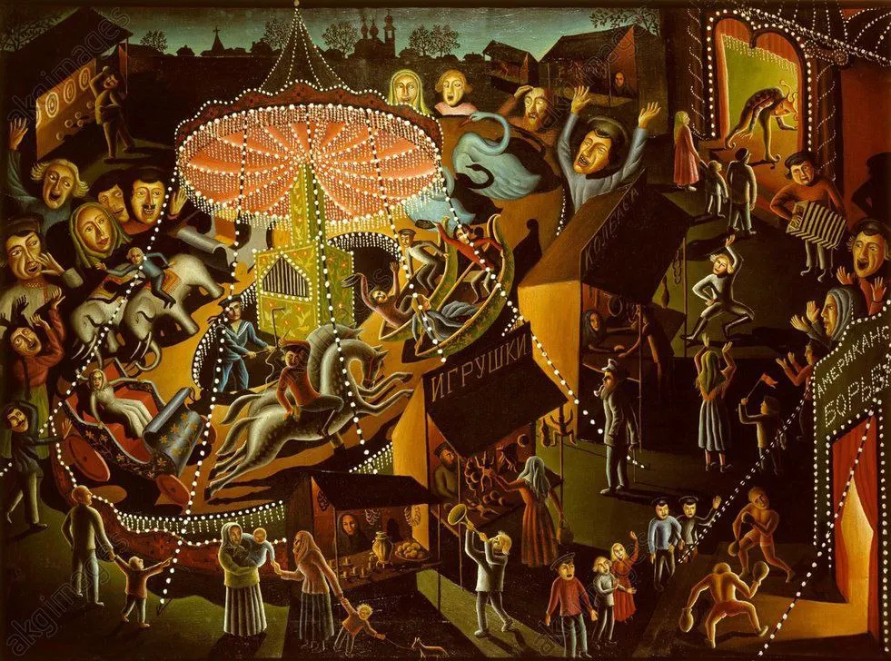

Drop #5 · September 5, 2023 · 6 min read
On a unvoluntary opera-mondo
Hey everyone (▰˘◡˘▰)

For the last twenty days, I have been reading Roberto Bolaño’s Between Parentheses (Entre Paréntesis), a posthumous collection of essays, interviews, and speeches from the Chilean writer. Since I first read The Savages Detective, Bolaño became among my favorite authors for several reasons: his intense yet light prose, his sense of humor, his encyclopedic knowledge, and, simply, the beautiful stories he created. Having read Bolaño’s principal works, I had to dig to find new material, and some months ago, I bought this late anthology with little expectations. Once again, the Chileno didn’t disappoint. The book reads as a non-linear collection of texts, with almost no correlation between each other: the only constant is the analysis and dissection of that mysterious discipline called literature. Besides that, the volume offers ironic, moving, and random comments on life and death, sex, politics, Latin America and communism, dictators, cities, and, of course, literature.
I consider Between Parentheses a mirror reflecting Bolaño’s world and personal fixations. An involuntary opus embodying a vision of the world - Weltanschauung - that is, at the same time, lucid and fragmented, similar to a glass hammered and shattered into painful glowing shards.
Hereby, I collected some of my favorite fragments to be spread around this newsletter’s network, as old letters and words coming from a remote point in space and time. It’s an unusual issue of Drops. An attempt at e-poetry and mail art.
On Chile

"The new buildings, the new streets, mean nothing. The streets of Santiago are still the same as they were ninety-eight years ago. Santiago is the same as it was when Teófilo Cid and Carlos de Rokha walked its streets. We still live in the age of the French Revolution. Our cycles are much longer and more crowded and twenty-five years is nothing."
"It’s strange to come back to Chile, the corridor country, but when you think twice (or even three times) about it, it’s strange to come back anywhere. Assuming, of course, that you’re really back, and not dreaming that you’re back. It was twenty-five years before I came back. The streets actually seemed the same as always. The faces, too. Which can spell deadly boredom or madness. So this time, for a change, I decided to keep calm and wait and see what would happen, sitting in a chair, which is the best place to keep a corridor from surprising you."
"They can’t forgive me for having a voice, Robert," says Lemebel at the other end of the line. Santiago glitters in the night. It looks like the last great city of the southern hemisphere. Cars pass under my balcony, and Pinochet is in prison in London. How many years has it been since the last curfew? How many years will it be until the next? "They can’t forgive me for remembering all the things they did," says Lemebel. "But you want to know what they really can’t forgive, Robert? They can’t forgive me for not forgiving them."
"And so any fantasy about a heroic or at least eccentric woman taking a solitary stance was shattered, as everything is shattered in Chile, and herein perhaps lies the country’s charm, its strength: in its insistence on sinking when it could soar and soaring when it’s hopelessly sunk. In its taste for bloody paradoxes. In its schizophrenic reactions."
On humanity
"At last they’ve found the roles of their lives. Finally, the soldiers have their war, their great war: before them we stand, unarmed but watching and listening."
"One is prepared for friendship, not for friends. And sometimes not even for friendship, but at least we try: usually we flail in the darkness, a darkness that’s not foreign to us, a darkness that comes from inside us and meshes with a purely external reality, with the darkness of certain gestures, certain shadows that we once thought were familiar and that in fact are as strange as a dinosaur. Sometimes that’s what a friend is: the distant shape of a dinosaur crossing a swamp, a dinosaur that we can’t grab or call or warn of anything. Friends are strange: they disappear. They’re very strange: sometimes, after many years, they turn up again and although most have nothing to say to us anymore, some do, and they say it."
"And to think of them all at once, Sebastián, Waldo, and Narcís, all three of them married now, all three of them fathers, is a little bit frightening because it means that the years have gone by, it means that all of us, but especially me, are leaving our youth behind, and it brings to mind yet again the word tolerance, which for me is the word that defines Catalonia but especially the word that defines Blanes, a town or small city that despite its problems, despite its defects, is tolerant, is lively and civilized, because without tolerance there is no civilization, without tolerance there are repressive cities, robot cities, cities that resemble the mechanical orange of our late lamented Kubrick and our late lamented Burgess, but that will never in any way be cities where we can live."

"The young man knows that life renews itself and that the art of renewal is often death. Intelligence is visible in his face and his eyes, and his lips are turned down in an expression of sadness, or maybe it’s something else, maybe apathy, none of which excludes the possibility that at some point he might feel himself to be master of all the time in the world, because true as it is that man is a creature of time, theoretically (or artistically, if I can put it that way) time is also a creature of man."
On literature
"For some of those of my generation, William Burroughs was the affectless man, the shard of ice that never melts, the eye that never closes. They say he possessed every vice there was, but I think he was a saint who attracted all the sinners in the world because he was gracious and unwise enough never to shut his door. Literature, his livelihood for the last thirty years, interested him, but not too much, and in that regard he was like other classic American figures who focused their efforts on observing life or on experience."
"Everyone must leave their home to seek the books that are waiting for them."
"There are some nice things — not many — about finishing a novel, and one of them is beginning to forget it, remembering a dream or a nightmare that gradually fades so that we can face new books, new days, without the constant reminder of what in all likelihood we could have done better and didn’t. Kafka, this century’s best writer, showed the way when he asked a friend to burn all his work. He assigned the task to Brod, on the one hand, and also to Dora, his lover. Brod was a writer and he didn’t keep his promise. Dora was less educated and she may have loved Kafka more, and one presumes that she carried out her lover’s request to the letter. All writers, especially on the flat day, which is the day after, or what we vainly believe is the day after, have two devils or angels inside called Brod and Dora. One is always bigger than the other. Usually Brod is bigger or more powerful than Dora. Not in my case. Dora is considerably bigger than Brod, and Dora helps me forget what I’ve written so that I can write something new, with no pangs of shame."
